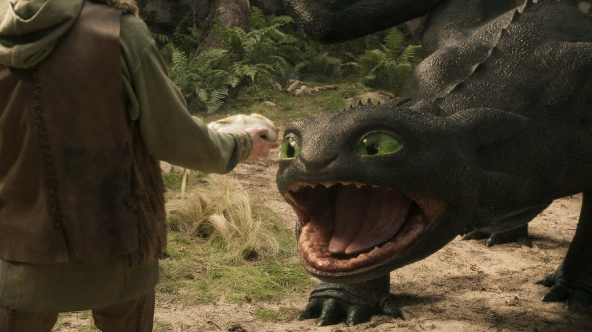

Dragon Trainer (2025): la recensione
Dean DeBlois rifà il suo film animato con attori veri: Sdentato è splendido, la storia quasi non cambia
Si può rifare un film amato quindici anni dopo senza tradirlo e senza ripeterlo? Dragon Trainer, nelle sale italiane dal 13 giugno 2025, ci prova con una scommessa insolita. A dirigere il rifacimento dal vivo c'è Dean DeBlois, lo stesso che con Chris Sanders aveva firmato il lungometraggio animato uscito in Italia il 26 marzo 2010. L'originale incassò circa 494,9 milioni di dollari nel mondo e ottenne due candidature all'Oscar nel 2011, per il film d'animazione e per la colonna sonora. Non è una cifra facile da guardare in faccia, quando si gira la nuova versione, quindi la domanda iniziale pesa davvero.
Una storia che già conosciamo
Il punto di partenza è lo stesso. Berk è un villaggio vichingo assediato dai draghi, e Hiccup, figlio sedicenne del capo Stoick, è l'unico ragazzo a cui l'addestramento da guerriero non riesce. Quando abbatte un drago raro e invece di ucciderlo lo libera, nasce un'amicizia che ribalta ogni equilibrio: il giovane costruisce a Sdentato un'imbracatura e una protesi per permettergli di volare, e scopre che i draghi attaccano per sopravvivere. Il libro di partenza è quello di Cressida Cowell, uscito nel 2003, ma il rifacimento ricalca la struttura narrativa del 2010 con una disciplina quasi scolastica.
Hiccup ha il volto di Mason Thames, Astrid quello di Nico Parker; Gerard Butler torna a essere Stoick, mentre Nick Frost è Skaracchio, il fabbro del villaggio. La scelta di Thames è la più riuscita del cast, perché ha la goffaggine giusta e non ammicca mai alla macchina. Butler, invece, gioca in casa e lo si vede: ha la sicurezza dell'abitudine, che dà peso a Stoick ma non lo sorprende. Nella versione italiana Hiccup parla con la voce di Lorenzo D'Agata e Astrid con quella di Margherita De Risi; Stoick invece è doppiato da Dario Oppido.

Dove il live action ha una ragione: Sdentato
Il vero argomento a favore del rifacimento si chiama Sdentato. Il drago è stato realizzato interamente in CGI da Framestore, mentre sul set gli attori hanno lavorato con pupazzi che facevano da riferimento per sguardi e movimenti, e il risultato si vede. La scena dell'incontro nella radura, con i due che si studiano a distanza, funziona perché il drago ha un peso e un occhio che reagisce alla luce. Allora non è più il personaggio disegnato che sapevamo adorabile, ma un animale enorme che potrebbe far male, e proprio per questo la fiducia di Hiccup costa qualcosa.
Anche i luoghi aiutano, perché sono veri. Le riprese sono durate dal 15 gennaio al 16 maggio 2024, a Belfast, con alcune scene alle Isole Fær Øer, e la messinscena ha una fisicità da paesaggio vero che il disegno non poteva avere. I voli sopra le nuvole, con la luce bassa che taglia il mare, sono il momento in cui DeBlois ricorda che il cinema dal vivo può dare vertigine. La musica è ancora di John Powell, lo stesso del 2010, quindi fa quello che deve: fa nascere l'emozione prima che compaia l'immagine.
Dove invece resta fermo
Il problema, e lo diciamo senza cattiveria, è che la storia si muove dentro una cornice già disegnata. Le tappe del racconto sono quelle del 2010, quindi chi ricorda il cartone passa due ore a riconoscere più che a scoprire. I 125 minuti sono ben misurati, ma somigliano a una canzone riarrangiata: tutto al suo posto, nessuna nota nuova. Anche i personaggi di contorno restano dove stavano, a fare da coro. Chi non ha mai visto l'originale incontrerà una storia solida e calda; chi invece lo conosce a memoria si accorgerà che il rifacimento non rischia mai.
È una posizione nostra, e va dichiarata: crediamo che un rifacimento debba giustificarsi con una domanda che l'originale non si era posto. Dragon Trainer ne ha una sola, cioè cosa succede se il drago diventa reale, e la risolve benissimo. Per il resto però preferisce la sicurezza all'invenzione, ed è una scelta comprensibile, perché in gioco c'era un budget di 150 milioni di dollari.
Il pubblico ha detto di sì
Gli spettatori però non sembrano aver pensato a queste cose. A ottobre 2026 il rifacimento ha incassato circa 636,4 milioni di dollari nel mondo, contro un budget di 150 milioni, e in Italia ha raccolto 9.206.775 euro. È più del film animato su scala mondiale, che nel 2010 aveva incassato circa 494,9 milioni a fronte di un budget di 165 milioni: il rifacimento è costato meno e ha reso di più, e per uno studio è il tipo di conto che fa decidere i seguiti. Resta da vedere se le sale premieranno allo stesso modo un secondo film che dovrà, per forza di cose, ripetersi un po' meno. La critica invece è stata più tiepida del pubblico: Rotten Tomatoes riporta il 78% di recensioni positive su 259, Metacritic 61 su 100 su 43 critici, mentre il voto del pubblico americano (CinemaScore) è A. Un seguito, tratto dal secondo capitolo animato del 2014, è annunciato per l'11 giugno 2027.
Dove vederlo e a chi lo consigliamo
A ottobre 2026 Dragon Trainer è in streaming su Now TV, mentre a noleggio si trova per esempio su Apple TV Store o su CHILI. La disponibilità però cambia spesso, quindi conviene controllare prima di abbonarsi.
Lo consigliamo a due platee. La prima è quella delle famiglie con bambini che non hanno mai visto il film animato: per loro è un'avventura limpida, con un drago che si ricorda. La seconda è chi ama il cinema fantasy e vuole vedere come si fa una creatura digitale con un'anima. Chi ha consumato il film del 2010 può andarci per Sdentato, ma sappia che la storia, in fondo, la conosce già.
Domande frequenti
Quando è uscito Dragon Trainer in Italia?
Nelle sale italiane dal 13 giugno 2025, con distribuzione Universal Pictures International Italy.
Quanto dura Dragon Trainer?
125 minuti.
Bisogna aver visto il cartone animato del 2010?
Non serve, perché la storia si capisce da sola e il film è pensato anche per chi non ha mai visto quello del 2010. Chi lo ha amato, però, ritroverà quasi tutto.